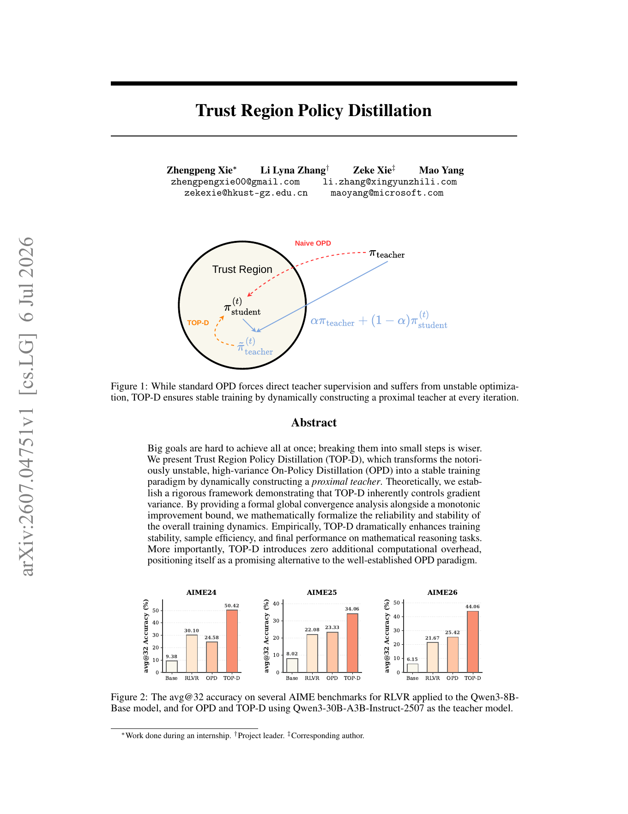
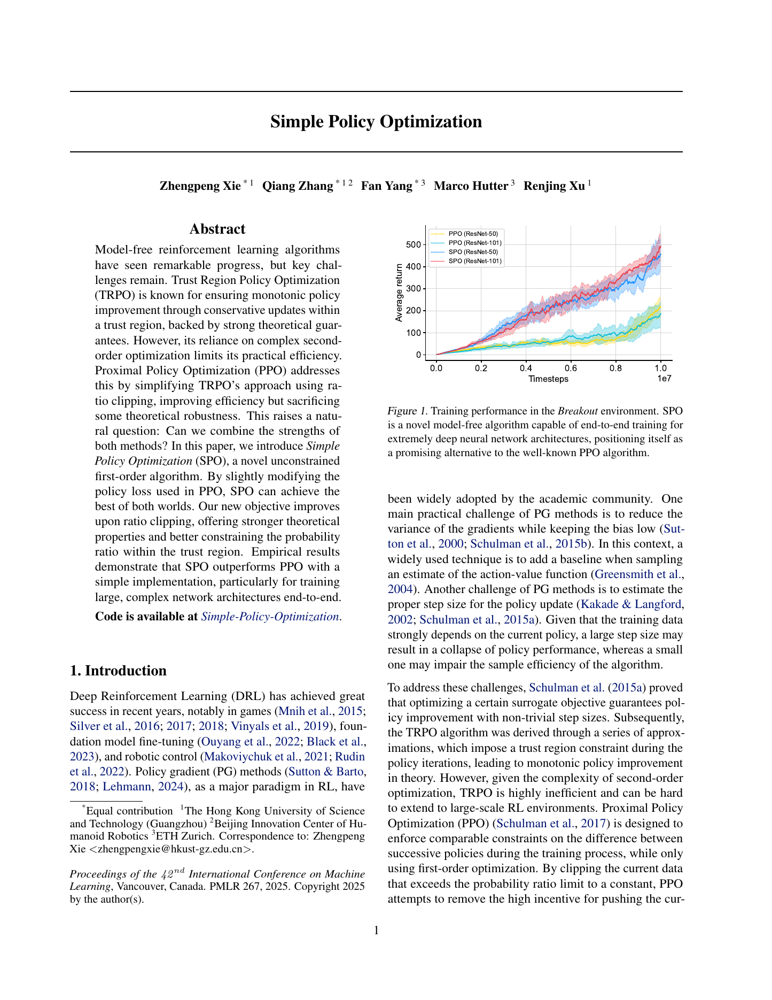

Education
Reinforcement Learning
Ph.D. Student
The Hong Kong University of Science and Technology (Guangzhou)
Reinforcement Learning Researcher
I develop simple, principled learning objectives for reinforcement learning and the post-training of large foundation models.
Education & Experience
My path spans foundational reinforcement learning, large foundation model post-training, and research at HKUST(GZ).
The Hong Kong University of Science and Technology (Guangzhou)
LLM Startup
Hunyuan Qingyun Project
The Hong Kong University of Science and Technology (Guangzhou)
Chongqing Normal University

01 / 2026
TOP-D
Stable on-policy distillation through a dynamically constructed proximal teacher.
TOP-D converts the unbounded learning signal of standard OPD into a smooth, lower-bounded signal, with formal convergence and monotonic improvement guarantees.

02 / ICML 2025
SPO
A first-order policy optimization objective that preserves corrective gradients beyond the trust region.
By slightly modifying PPO's policy loss, SPO combines implementation simplicity with stronger theoretical properties and stable optimization for deep policy networks.
From objective to embodiment
Two independent robotics projects use SPO-style constraints to keep policy updates corrective and stable.
Physical Intelligence. The technical report implements a DPPO/FPO variant with an alternative PPO constraint following SPO for real-robot reinforcement learning.
Technical report↗Brent Yi, Hongsuk Choi, et al. FPO++ uses an asymmetric trust region: PPO for positive advantages and SPO for negative advantages.
Paper↗Full-length official demos. Click any video to open its original project page.
Zhengpeng Xie